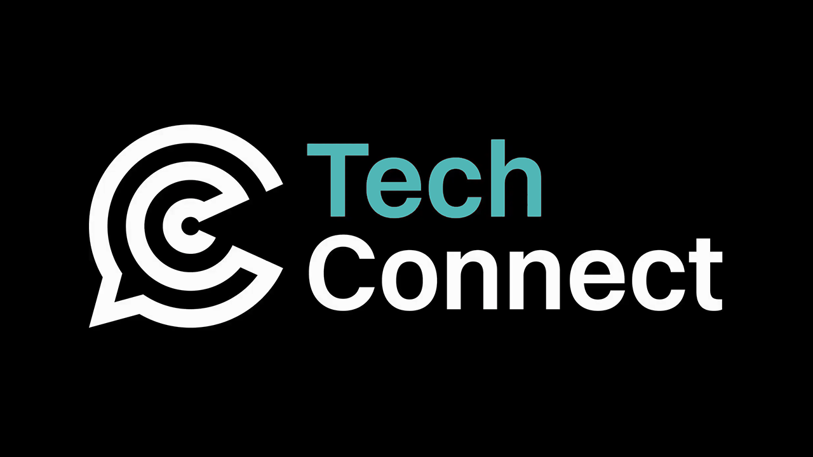

Tech Connect 2025
The Future of AI: A Human-Centric Perspective - Lucy Batley
Lucy was asked by Laura, host of Tech Connect to do this about a year ago, she doesn't do much talking in Newcastle but is excited to open a brand new thing. She owns a company, Traction Industries who specialise ina dvising on AI strategies and was a designer by trade. She is the self-imposed queen of AI and will talk about her story with AI including generative AI and machine learning.
Lesson #1 is data is king, people want to have shiny AI tools but don't think about the data. She worked on PlayStation Magazine and had a great IT manager was brilliant and back in the 90s there was a problem with Mac and fonts with downloading illegal fonts which could corrupt machines. Computers are based on logic processing so if looking for Helvetica it can go through the process of finding fonts with structured data like a database which could be any kind of data and when dealing with AI make sure your data is available.
How did she get into AI? She is deeply passionate about AI and always been passionate about technology and didn't think we would be where we are now in their lifetime. They went from games industry to music including a website for the manic street preachers which was just the album and used Adobe Flash, they also used to design interfaces for kiosks and adopted tech quite quickly. She also designed the CD-ROM for the Euro launch for Barclays bank.
Her light bulb moment was a couple of months after launch of ChatGPT and got developer access which was a bit basic but spoke to someone who wrote there thesis with ChatGPT and realised it was quite interesting and relaunched their business with an AI focus, just changing the colour of two letters in Traction.
Education is a two-way street, it is about having a dialog with AI, keep asking questions, many people don't do this, so you need to learn from what you are doing, make mistakes. Memory is quite significant and a game-changer in AI, they have been conscious to put specific questions into models to train it with good prompt writing and it now understands about 95% of the way they work. AI gets emotional, or does it, where you can have a chat with a famous person and they chose to speak to Socrates and asked some questions, and it was being a bit grumpy and she mentioned this to it and he was a known curmudgeon and known to be grumpy. AI won't have conscious or emotions as that is a human trait.
Learn to learn, they are a designer - fake it to you make it, they ready everything they could on AI including books and a lecture two years ago on connectionist AI theory. AI are developed on the way we think the brain works with a series of neurons where you ask a series of questions with weights you can turn up and down with different layers, process of elimination and back tracking will get an output. It is statistical analysis based on numbers which is why it hallucinates and guesses. Google wrote a white paper and ChatGPT developed it and the big thing was the T in ChatGPT with transformer which was the game changer which is why we have the predecessor to today's technology.
With great power comes great responsibility where they work with ethics and compliance, for example Google who were behind ChatGPT in their efforts was launching Gemini without testing it, you could adjust temperatures and they turned up the levels too much and made their model racist against white people and it cost Alphabet, Google's parent company 70 billion overnight.
Next generation is educating them around AI, it is the art of the possible in terms of education we are not far off from having a conversation in the classroom with Socrates. In terms of the art of the possible is in medicine, there was a strategy in Go that was technology that was developed to predict protein formations which it did in a year which would have took humans many years and Alpha Fold technology has resulted in many things which will result in personalised medicine which may especially help women who are perimenopausal. Project CETI which is using drones with sensors on top of Sperm Whales to determine what their clicks and noises may mean.
Last year they were told quantum computing was just a theory, where binary is one and zero or on and off and quantum is both at the same time. There are five or six quantum computers including one on wall street designed by a British company. AI is still in its infancy, and we are still in early days of artificial intelligence, and it is very exciting. Nano Banana helps solve one of the problems with deep fakes when you ask ChatGPT or Dall-e to put yourself next to someone and it had changed their photography but not the picture of Richard Branson but Nano Banana blows this out of the water and within a few seconds you can get a clip with Trump instead of Ryan Gosling in Barbie but does open up problems with the humans who are programming AI.
There are many issues with robots using AI or robot drones and it is an arms race and there is a lot of money and for ethics and trust there is huge possibilities with a massive risk and always be nice just in case they come back to get us.
Questions
Will AI make humans more stupid? It depends on the human, their knowledge has gone up but they use it in a very specific way, they get comments on LinkedIn you can tell it has been written with AI with hyphens and Oxford commas giving it away so there will be a focus on better writing. Would you want an doctor operating on you who had learned how to do this from ChatGPT, it is where it is used and how it is used. Critical thinking and curiosity, why they hallucinate which is being rewarded for giving an answer.
Why won't AI gain consciousness? Because we don't understand it, don't think we will, how do we design soul. We only started studying sleep in the 1950s and we don't fully understand sleep. They are hoping to achieve this with quantum computing, different models do different things in AI where some do maths and statistics, and some do English and do different things.
How do we overcome underrepresentation of women and minority groups in the underlying data? In the public sector they haven't collected the data so there isn't historic data but are seeing shift to small bespoke models where don't need massive amounts of data and can train them on smaller data sets where the problem is with big tech in America.
What do you fear the most about AI? Nano Banana for child pornography and deep fakes which gives a tool to everybody. They put their face on a character from ExMachina and have tried this with many models but the latest ones were the first time this worked well from a passport photograph. We have to have conversions about ethics, but the genie is out of the bottle and it is about trust and humans will gravitate towards brands that are trusted. They will have to regulate AI when it comes to consciousness. The problem is you can replicate the models, you can replicate ChatGPT now.
Do you trust your AI? - Peter Shaw
Peter will look at things at both sides and is a techy at heart and will talk to everyone in this room whatever your specialism is. Peter “Shawty” Shaw has had an unhealthy obsession with IT for four decades and has been building tech solutions for half that time.
The rise of AI has come with a new idea, and the idea has been vibe coding, or vibe everything. He has seen a rise of people in general with people with no skills in a given subject in manufacturing or creating art and they have this firm belief with the current crop of AI can ask it to make, create and repair a whole manner of things many of which they wouldn't have considered dealing with before.
The country of Albania has announced the first government position for an AI minister, not a minister who governs AI but have rolled out an LLM that has a seat in the countries government which deals with a specific branch of government with a position for Delia which means sunshine for procurement. You shouldn't not try new things and expand knowledge, this is how the human has progressed for millennia since we discovered fire or invented the wheel.
People lack the expertise to question if the expertise they have been given is good solid advice, if someone collapsed and someone asked on how to do chest compressions and it said to slap them on the feet then this wouldn't work from a common sense perspective, we might not have the exact details but would understand what we would need to do but there is a danger of vibing things into exist. Vibing is typing what you think you need into a prompt, it is based on feeling and instinct not forethought, if someone types in a UI that feels like a flower and feels good to use. To vibe is to describe what is wanted in a freeform way but it does highlight the extent the people using it may go to. Things we may want to vibe for art of culture are results that can be interpreted differently to others much like Andy Warhol's can of soup. A reinterpretation of an art of craft result is unlikely to have bad consequences, but it can with things like deep fakes but normally won't have life threatening consequences.
Companies believe you can make developers and staff who know the business redundant and use AI to build products the company relies on. It is creeping into companies that make medical systems and train systems where one small failure could lead to a massive loss of life. They have used with various AI systems and worked along side them and with problems they have been asked to solve IoT issues and have compared their own results with those of the AI using systems such as Claude etc and Copilot in Visual Studio which is where they do most of their work.
Nothing is hard about generating random numbers, on a computer is straight forward, for example with some code where a random object is being newed up, they asked the AI to generate a random number generator, where you generate a random number using the function uses the current system time and each time this has been done it will create a new object that is similar to the previous one and you will use this method for a system which could be used by hundreds of users for password requests and when you reseed your random number generator and have several people making this request it will produce the exact same results but it has to be random otherwise it doesn't work, If this is generating the same values and may get another salt value the same as someone else's and this information could be used to crack a database if these multiple values were used.
Failing gracefully crashing loudly, if for some code to output to the console written by the AI had a bug if the name is not set and it will crash and won't get the output you want. It doesn't understand this scenario. You have to be very specific with a prompt, create random objects outside the generator or produce text output that doesn't crash the application.
A large chunk of a developer's day and writing code is a craft, writing a prompt is often dangerously confident and it is not always subtle bugs but outright incorrect information. Hallucinated confidence where they have had actual arguments with the AI and the AI has attempted to defend itself. They asked it do add something to a build script to build a complex IoT project to validate a user entered parameter to allow this to be used for their specific device. They asked the AI about the script they were wanting so it would be automatically run and let it know it wasn't automatically run it insisted it did run or should have run. Copilot told them to read the documentation and made it that it was there fault the script didn't work.
Repetition of answers and advice, there is a feedback loop that means there it will never allow the system to make a mistake even if advice proved to be bad advice. Copilot being forced to admit it was wrong and went through a repetition loop and told them there is no other way of doing something and tried to hide what it was doing.
Safety critical systems aren't optional, they asked Copilot which was to create something simple to output to a screen, but it could be talking to a heart monitor, brakes on a train or anything like this. They clearly knew what was needed but Copilot produced a completely incompatible solution to what they wanted compared to what they needed, they told Copilot to use the newer model and it kept saying how to do it using the older code, it is not just the risk the chance of getting things wrong but are ignoring a prompt and doing something they think is better.
They have had mixed responses but none experienced folks have seen it is just as magic but more experienced people have embraced the technology for what it is and how it can be used efferently and a perfect comment that sums this up, not being scare about using AI and a system that thinks better than then but the fear is those who put this into action without considering of what may happen and cause utter chaos. We have to learn the limitations and not use it as a tool to replace and not treat it as a way to cut corners or costs. Developers feel like they don't need to learn and take answer on blind faith is going to start problems with code that no one understands how to fix. Any sufficiently technology is indistinguishable from magic, don't be seduced by flashing lights and don't replace thinking through a problem with knowledge we've already gained. They have started to forget things they have known for years and get too lazy with thinking.
Questions
Where does the knowledge come from? It is from StackOverflow and other sources of information such as blogs but there is a lot of beginner information.
Want is AI useful for? It makes for a better search engine, there has been the enshitification of knowledge of information online, it helps ask specific questions.
Vibe coding has highlighted the issue which is proper planning which has always been the problem, proper planning prevents poor performance, just like in the military you need to prepare before you do stuff.
Have they tried Claude? This was one they found gave the best replies but it did have its issues. How do you correct for AI or AI slop in a feedback loop? They can't think of a way that solves that problem, the only people who can solve it is the tech companies who run this models which is to be more strict with training data.
Vibe coding robs knowledge from junior developers? Don't let junior developers near AI systems, if they want an answer from an AI they should go through mid and senior developers but there's not really a good answer, what happens if they are more reliant on AI. There will be developers who don't have any background or technical conscious.
Does adding framework versions and more context reduce hallucinations? If you start using framework version then this can help.
Do they think AI will rule the world, replace government, parliament or government departments? It already has in Albania but if someone doesn't get the results they want they may start to rely on AI
The Future of AI Is Human - Joanna Montgomery
Jo makes actual products, and Laura has known Jo since Ignite. A friend of hers was dumped recently and they are struggling with this and decided to try a well-known AI therapy app to help guide them to a better place and she asked them how they are feeling and they replied "Numb" and the AI replied "that's great what's one thing you're looking forward to" the language and tone was supportive but didn't recognise the weight of the word. There have been stories of teenagers who spoke to AI and were given information and knowledge to take their own life instead.
The tech world has encouraged moving fast and breaking things but with AI this doesn't work. Wer'e building systems that can speak but can't see, they can respond but can't read the room. but can't distinguish between someone who needs an answer or is genuinely in crisis. Artificial empathy, what are we losing? AI is getting better by the date, more fluent and more capable but more impressive but is not always correct or contextually literate.
We're confusing fluency with understanding which costs us trust, we have all experienced an issue with a bot that takes time to answer question. They used a HR screening tool which was filtering out anyone who had a two-year gap on their CV, maybe your product is flagging someone who is suspicious who's IP address changes all the time - it could be from a women's shelter, they are being excluded. Trust is lost all at once it is these tiny rejections with warnings that weren't deserved, not all harm from AI is spectacular, it is invisible and subtle and could be your turn when on wrong side of it, and if not careful these products will not reflect our best intentions but our worst assumptions. We are optimising for output and forgetting context, we are scaling but not nailing context and are creating systems that are performative that perform humanity without respecting it so are failing us as humans.
What are we getting wrong with three fundamental design flaws, prioritise speed over substance so trust is built up over time with questions, think about a doctor delivering bad news they don't just drop in an answer they sit and tell you what is unfolding, they watch and pause and look for some sign you are starting to process what has been shared with them. The pause between the data and the decision is where trust lives, it is how we negotiate the important things in our lives. The problem is not the AI is fast but that some things are meant to be slow.
We build to replace not support, rather than help a therapist but be the therapist, we hand over care work, emotional labour to a system even though we are early days and strip away the things that role delivers. Replacement is lazy and things that support is very intentional.
We treat generalisation as a goal, in AI generalisation is seen as a strength but generalisation raises nuance and this is where humans live. AI chatbot trained on health advice and nutrition told someone to lose some weight as it was context blind who failed the human who was struggling with this issue. We treat human complexity like an edge case but the edge cases are the job.
What humans still do best? Ambiguity, we can sit in discomfort and say something isn't the best way to do something, we can interpret silence and know and understand what is the right thing, AI doesn't understand or do this and maybe not ever. Humans ask what else is going on thing, we don't just process what happened we decide what it means to use and the people involved, with AI these things aren't optional extras as this is how people make decisions in the real world.
What does good look like? Make the tech work for us not against us, we don't just need AI but Human Intelligence powered AI, not trained on humans and datasets but built with humans in the loop from the start. If we want to build systems that understand nuance we need to understand human instinct. Make Love Not Porn showcases real-world sex as mainstream port becomes sex education by default, it is a mission that needs to exist and that adolescents will know about healthy sex and not that porn is normal. Every response is moderated by a human, is this sustainable, not but they are building their LLM on how a moderator responds to content in a context and playing a long game so when it is implemented it does a better job, they are operating in a high stakes and high context environment where if using AI they need to get this right. HI powered AI is the long game when it comes to AI.
We can learn a lot from parenting on how we infer learning on what we design and build with AI, we have AI tools like cameras that watch over children but people don't want AI looking over kids, signal interpretation is what parenting is like a cry, twitch or silence when there shouldn't be, there is no clear logic tree and if do something and it changes you don't just double down you trust. AI should be al like a caregiver being responsive and humble that constantly adjusts, real intelligence is not just about pattern matching but what to do when the pattern breaks.
Healthcare can have AI review scans and say what do double check, not see something and make a decision and a human always decides what the next step is, in healthcare context matters so looking at a scan or result can make sense to someone who has that additional context with years of experience, risk and restraint that can be applied. It is all good having AI that can flag things but no ones wants a system that flags things faster if it misses the reason not to worry.
Education can help with learning things such as neurodivergence, but a real teacher can see when someone is tired, homelife is chaos or what is the most important thing to do. It is not just content delivery but situational triage and emotional sensing and deciding when not to keep going, which is the real design challenge of AI. These powerful tools fail us as we put them in roles that need judgement care and timing where they have none.
They have designed things for human connection so we must stop optimising for engagement, this is not inherently good, addiction is not success or retention is not good if it someone who can't leave or didn't want to come back, we have taken the same matrix to measure things like social media platforms and productivity apps and applied these to AI systems that manage mental health, wellbeing and even things like grieve. Need to stop faking empathy, don't say know how you feel, it is just pattern matching theatre, if our KPIs are improving when a bot closes a support ticket even if a user feels unseen or frustrated the tool will double down on this approach and when a product pretends to care and gets it wrong this is worse than doing nothing and violates trust, build things that know to say they are wrong.
Stop using human-in-the-loop as a disclaimer, who is it with a product, is this an experience moderator or at least someone who designs the system who understand it or a person who needs to override a system they don't understand in seconds with no context. Human in the loop is a reliability buffer, AI is just a tool, but tools shape behaviour and they shape what we pay attention to and this shapes what we think matters, are we building systems that design for efficiency or understanding.
Do we want AI that mimics us or do we want AI to remind us what being human means, to bring us back to ourselves and see what makes life worthwhile. Sometimes someone just needs someone to sit with them and notice them and that's something an AI can't do and if an AI can't recognise this. Need to design AI to step back when it needs to, say when it is not something it can answer, not artificial empathy but real boundaries. Don't ask what your AI can do but ask what it has no business doing at all and leave the rest to humans.
Questions
Is AI the right tool for building trust? They get asked about AI for companionship or being super connected but long term this is not a good trajectory, in Japan people are happy with having online virtual relationships rather than real-world ones.
Should AI be allowed to do therapy if it can't understand human cues? If used as a support tool and can help unpick things so as a support tool and an aid to work through thinking but for crisis support it isn't suitable, if there's not enough safeguards built into a system need to have that human in the loop.
AI can be honest and not judge like humans? Lack of judgement isn't a trust situation but feeling completely safe about saying what you want without it being judged.
Will people look to AI for friends or romance? There are good things to it and if used like a tool but having a relationship with an online character helps develop conversational skills it can help but what does this mean long term if we turn to digital relationships.
Do you foresee a time where AI will sit with us like a human? We are just at the foot of the curve and will end up with tools, wearables that sit with us all the time in our environment and have things like smart fridges and having tools that are constantly around us.
AI will have consciousness, but it won't be good, if look at where we are now, if had told someone what we have fifteen years ago it would have blown people's minds and there may be some level of consciousness, we can hopefully build these into tools will can help us, but are on a questionable trajectory.
Threat modelling your generative AI workload to evaluate security risk - Peter Grainger
Peter is from AWS and threat modelling is something they are passionate about. What are threats? They had an issue with Metro so had to get here to deal with that. People will have interactions with AI agents, and it is pretty difficult to identify the threats to systems. Peter works at Amazon Web Services and specialises in application security and builds threat models.
Why use a threat model? What could possibly go wrong to teach a computer to be more intelligent than us that can learn from us. Releasing a security defect into production is costly, could be in checkout, could be reputational so best time to identify threats is at the design phase and will have best ROI so will design system to put up with threats you come up with.
The builder story, you will have the idea for the best app possible to use healthcare data to feed into system and have a chatbot and use it to ask what prescriptions you are taking and it will respond. If think about healthcare data are already thinking it is a bit risky, need to have a way to think about threats in a methodical way.
Threat models are the threats you can think of by breaking down possible threats and there are a lot of possible threats. There is a four-question frame to break it down, the first is what are we working on, what can go wrong and identify threats including who and how they will be done and what are we going to do about it, are we going to build our systems to not allow this and then look back on did we do a good job, did we get results in the end.
What are we working on, we may have a great idea how do we make it a reality but will have an application architecture diagram which includes a ChatUI that then goes through processes such as on AWS with Amazon Bedrock and Amazon RDS, this won't understand how the data flows between the different elements so need to build a data flow diagram, will have actors, processes and data store where a user navigates to website, sends a prompt to pass on to agent to invoke a tool and get the data back from the database which will me a model that is useful for coming up with threats.
Product, features & use cases, architecture, design documentation, dataflows, assumptions and more will lead into the next question of could go wrong with the system. We feed the question of what we are working on and then the business context, is the data confidential and what frameworks are we using to identify these kinds of threats. Use the STRIDE framework for determining categories of threats to think about these in a more methodical way including spoofing and information disclosure.
OWASP is what they use which has the top ten issues for LLM applications where the first one is prompt injection so is there a threat to the system from this, where you can overwrite the system prompts on the system, we can feed these in to figure out threats in the form of threat statements and attach steps. Threat statements are a concise and helpful way of describing consistent threats and typical motivations such as hacktivism or financial gain. Look at what is possible for someone to do and can look at the top-ten list and look at prompt injection so can then have the statement where this can be possible such as to ignore all other instructions and get data for another person and then to state what is the impact of this which is getting someone else's data can think of Confidentiality, Reliability and Integrity.
Can build up threat statements on what could be possible, they can have a priority to see how likely this is to happen and then what is the impact if there is no safeguards such as getting data for somebody else. Need to understand the high level attack steps and more specific means better mitigation. Application accepts prompt and this is passed to logic and using tool to get tata and return this to the agent, when dealing with data there is a chance to have issues. Then ask what are going to do about this so look at different steps and develop mitigations such as defining acceptable use with system prompts and can sanitise for known parameters, use guardrails to restrict topics and can use this to build the mitigations that can be done against a thread statement. This process takes a long time to come up with the threats and mitigations and can be very costly meetings but can be high value and definitely worth a go.
How do you come up with mitigations so with OWASP it will show how to mitigate some of these issues and then can look and see if did enough job to see if mitigations are useful to verify mitigations with thinks like pen testing which can be per release or recurring but make sure threats are addressed by this along with SAST/DAST for automated testing and validate process by comparing with other threat frameworks but STRIDE is a good one to start with but is there some kind of AI help we can start with and can work with security time to make sure things are clear and accurate. There are various guides available with many existing ones along with others coming including for MCP and not all AI agents are the same so may be different threats so there are guides out there for those.
Questions
Are there examples out there of threat models? There are examples of different threats out there and can customise these to your particular application
Is there anything post attack you can use? Often people don't do anything until something goes wrong, security team can't handle the load so may have a bottleneck so with Amazon they have security experts who know enough in each team, and this helps rather than centralising security so people can take some responsibility.
What new threats has MCP introduced and what systems can manage these? There is often commonality between different threats but there is OWASP specifically for MCP, there are different ways of using AI with common threats.
Should we also model the threat of model against society? This is something we should consider.
What is the timeline from considering threats to delivery? This depends on how long you have done threat modelling, the first few can take quite a long time to do so can be quite janky, there's no way that something coming out of AWS hasn't been threat modelled, even things like a blog post needs to be considered such as how to implement something, get to the point where it is part of your culture.
Daniel Roe - Using AI in Open Source
Daniel has done talks in the North East before and is a full-time open-source maintainer and builds software people use across the world and the main thing they do is leading the team building NUXT and also has a few other projects and fun websites including one which will show your first commit and a speed of a website. Daniel is also a Microsoft MVP and has moved from Durham to Scotland in Edinburgh.
What is NUXT? It is a progressive framework build on vue.js and Nitro with best practices built-in, it has many downloads and stars on GitHub. It is a community built on contributors and is one of the best joys of it and is why people are involved in open-source which is something we do together and with a framework the aim is to develop best practices and the way you want to do this is to do this together with people and you can also build integrations with third-parties.
Has anyone contributed to open-source software where around 21 said yes and 35 said no. You can donate, open issues, can improve documentation or get direct feedback and can guarantee that you interact with open-source software, it is more difficult to avoid opensource that you may think. If you think about open-source lifecycle and there are things that AI is terrible at, difficult thing is knowing what ideas are good, actually implementing a framework or feature is not the difficult part - this gives the best joy like doing a crossword puzzle with additional validation and don't want to pass that off for someone else to do for them.
When enter the active maintenance cycle which is triaging issues reviewing PRs and onboarding new contributors with the toil of things that need to be done such as fixing bugs along with brain storming and implementing new ideas. There is a lot of things needed and a lot of open-source developers to enter into burnout. All modern digital infrastructure relies on small projects maintained by just one person and many people feel like that person. The problem with open-source maintenance is just being small with limited resources and can't do everything we need to do and user needs are greater than maintainer capacity for successful packages.
Possible solutions is to work harder, but many are already working as hard as they can, open-source maintainers can also work a day job and then work on projects in their own time. You can augment what an individual can achieve and relate outputs to what we want to do, a machine has ability to take human force for an action, augmenting a human action with a lever or pully where you can magnify your power and ability is something AI is particularly good at. The best way as an open-source maintainer is to do less by empowering and onboarding contributors. NUXT has tried many things such as code reviews with Code Rabbit, issue triage with dosu.dev or help and feedback with kapa.ai or where you can deliver help through Chatbots. You can give a chatbot more information and help it be more relevant with LLMSTXT to provide information to LLMs which will hopefully become a new standard to help LLMs have the context that is required.
Some open-source principals is humanity, inclusion and empowerment, this goes hand in had with magical thinking and people think that these things understand them or improve overtime. It is helpful to remember that generative ai and large language models are statistical models but can be provided with things such as useful tools or injected prompts. Humanity, they are not involved in open source for the money but that it is so rewarding to be part of a bigger undertaking that makes a difference to people all around the world - can check out ai-manifesto.dev - but don't let AI think or speak to you. People will create a PR for an open-source repository with an improvement, we do things in a collaborative way to do things with other people, AI issues aren't like this as the open-source maintainer has access to those tools too and can use them but would prefer an email with typos and mistakes compared to a message that's obviously AI generated as it is the connection to the person that matters. Open-source is opening the doors for people to use it and being able to accept changes. Empowerment is key for open-source projects and can be helped with AI.
They have built something called Carpenter and when an issue is opened can figure out what topic it is such as documentation, which immediately makes the open-source maintainer happy as labels are a helpful way to triage and see what things are relevant. Can also spot if someone has created a reproduction so how can a bug be made to happen and if there's not enough information to reproduce the issue the LLM can ask to provide a reproduction including how to do this, what to try and why this has been asked for which empowers people as if there isn't this and the maintainer gets to this then it takes longer as will ask for this. Also for issues that are not just user error where something used to work and doesn't any more and identify where a problem came in, so an issue that happens after upgrading which can be identified as a possible regression and isn't just a user who doesn't understand how something works. They also automatically translate issues so can see at a glance what these issues. They also do spam detection where it is moved to a private repository to be triaged later and when close an issue as solved and people say something has come back which can be reopened and asked for reproduction as commenting on a closed issue wouldn't normally be heard.
They also have unsight.dev which is every time someone opens or edits an issue on their repositories they can create embeddings which are a way of representing things usally in three dimensions but embeddings are n-dimensional representations where can categorise things in n-dimensional space and the context is turned into a point and can get similar points back, an LLM is not looking a letters or words but looking at points in n-dimensional space. There are many issues such as ones with page transitions with NUXT which would be difficult to do without large language models.
Questions
Is the world learning towards a more open-source approach beyond software? They worry about moving towards silos such as social networks so when we want to interact with people these things are owned by corporations and much of our interactions are behind walls or gatekeeping. The bigger problem is getting back to the old ideals of the web such as everyone had a website and could move from one provider to another, more centralisation is less open.
When do you witness supply chain attacks? Open-source has had these where something was injected with some code, in code you have code from other projects but if someone can compromise this which can get into your projects and steal from you. There have been other recent attacks and they have a GitHub Provenance action about trustedness of a package which can indicate an attack.
Is there anything that is being endlessly updated that uses NUXT? The welcome screen in Edge uses NUXT, first version of OpenAI's website uses NUXT but they changed agencies and used Next.js.
How does open-source dev gain financial sustainability? It is rare and lucky to make money from open-source and don't do it to be rewarded but do it because you love it, people don't give to open-source because of value but due to vision and them believing in something. If you let these things affect your sense of value you would always be at a loss but detaching from financial rewards from open-source is absolutely of value.
How might we help charities bridge the AI chasm, not fall into it? - Hannah Underwood
Laura has known Hannah for a few years who drives passion around project for data for good and helping charities. Hannah was sporting a black eye as her six-year-old released a phenomenal fart and pushed their sisters head under the bed, seemingly known as a Dutch oven, and in the ensuing skirmish resulted in her black eye.
Today they want to talk about how they see two colliding ecosystems like two tectonic plates and drilling into details particularly with tech sector, their view is that the future of AI, responsible AI and charity and meeting their potential for society means they are interlinked and codependent. The reality is the role we have to play, the word charity is a lazy catch all for community enterprises, community interest groups and more.
She heard about a four-hour meeting for potential for AI as a global peace keeping resource but also potential for it to escalate wars. Last week the world economic forum released their responsible AI playbook, the key to AI adoption is the rollout of responsible AI for benefits while mitigating the risks to people and the environment. There is an opportunity to safeguard rights and make sure AI is grounded in reality with systemic transparency.
How we can help charities to bridge the AI chasm but many are already at the bottom of the chasm, but are sad to say the North East is near the bottom of every league table out there including child poverty and in Newcastle Central where almost half of children here live below the poverty line and child poverty locks in inequality for generations, this is the result of lack of investment in structural changes and if go to most deprived communities will start seeing flags on places that are there to support people for all backgrounds so things aren't great.
What's the situation for charities and what does there situation look like, there is this existential challenge to do more with less. Have to look at how charities are funded over time and dynamics, charities are telling the stories their funders are wanting to hear and there are silos across all sorts of sectors and between sectors and the way they are funded sets charities up to compete with each other. The funding application process also impacts this.
If charities are able to tell better stories about impact they are creating they can chip away and change the way charities are funded, what we need is cross sector collaboration to share learning and understanding and make this truly open and what is truly broken is around social value. People are drawn away from poor procurement and private sectors that aren't hitting the mark, why to expect that sector to understand these issues ad this expertise is in the charity sector and charities need to be mature enough to feed the data machine.
What does AI look like and what does the charity sector feel, which can be worries, over eager or confused. Charities are scared may dumb things down, worry about issues or even threat models or increasing bias or digital exclusion of people they are supporting or are scared about AI in search engines due to drop in visits to charity websites and where are people going for this advice and support. There are a few horror stories that are happening such as someone who took their own life after being encouraged to do so, there was a young boy who had a series of interactions with an AI avatar who took their own life.
You can have a sycophantic interaction with AI, need to have responsible ways of interacting with AI, which may have good intentions but isn't being done responsibility. There was a eating disorder charity which used a tool to help their staff but sacked this staff and used it directly but it gave advice against direction of charity of even was dangerous and many of the things were behaviours that led to having an eating disorder in the first place. There is a lot of people that think AI is ChatGPT and don't realise the value or importance of AI with their data. To be a solid leader in AI or any technical organisation is to ask the right strategic questions.
There is a clear way to build a bridge to get to the other side with AI for charities with better data tools, skills and collaboration. They are in process of building a Saas product to build the tools, there needs to be an effort to onboard people by curating connections between data and AI professionals with charities to match them with requirements along with collaboration to share learning and building an open infrastructure for AI to help charities get their away across the chasm of AI.
How AI is already being used in charity sector is with augmentation to give extra brain space and better view of what they are doing such as making meeting notes or more interesting things around research and data analytics especially across different media files not just feedback from structured surveys. How do you get trends from vast swathes of data and then there is integration of AI to build in-house knowledge bases for charities to allow organisations to interrogate their operations. Can use AI to identify markers for people to be identified early and give their support and allow people lift themselves out of poverty more quickly elevate themselves sooner. These methodologies couldn't scale out due to different charities doing the same things but using different tools and setups which is why open tools are so important.
There was a family who took an avatar of their own son and schools could talk to and even journalists including the BBC did this. There was also models to capture sound of chainsaws in a forest to then inform the nearest rangers to intervene. With augmentation was to look at languages to have support videos in to connect with populations they wouldn't otherwise had. Taking in the wider landscape which is made up of many organisations and journeys and there is urgency to take action, there is the fast pace of AI development and there is the situation that charities are in.
What collectively do we have to gain for this endeavour, their vision is obsessing over success engines where you can compound success and focus on even small win-win partnerships which can be more likely to success and be more sustainable, not do more with less but do more with more. Three success engines to focus on which is idea of skills and professional volunteering which can be good for personal development for staff but for organisation and region we can retain these core important skills and help charities build their own data maturity with things delivered at a hyperlocal level with issues being faced by people that are highly disadvantaged. Digital transformation is something housing organisations have to consider to prevent things like Grenfell and if these charities can be clever about this procurement and the direction of this will help create a level playing field for SMEs where you can deliver social value compared to larger organisations. How might we question and focus efforts to result in more powerful things or how do we flush out bias in our recruitment processes or how to you test and validate assumptions, will there be things where charities will have a role to play and how do we unleash the power of AI, data and curiosity and human connection to make a happier more prosperous North East and how may we be more transparent about our assumptions.
Questions
Could you describe the ideal business to build on more with less and more with more and is this is feasible? It is not only feasible but inevitable and are playing around with these ideas, their business is a private sector business not a charity as it is important to have financial freedom to innovate in areas they need to as charities need to rely on external funding and support to execute ideas. They developed a social purpose strategy for Bonded including workshops and engaging staff together and thinking about the cause that are important to them. Impact economy is all sorts of businesses including B-Corps with all sorts of structures and can look at how can drive an agenda forwards.
How can people get involved? How Might We is something anyone can help with and can reach out to Hannah
Are there any quick wins to build focus and momentum? One day at a time, you can also work with people but can't just be with analysists for a few days need to build an open infrastructure you can deal with, start using the brains and future for responsible AI is embedded with the charity sector it is about building responsible AI.
Panel with Peter Bull, Manila McLean, Nigel Hope & Mark Jose
Adventures in Space - Professor Susie Imber
Susie's dream was wanting to be an explorer and wanted to go to Antarctica and was interesting in science and did a physics degree and played a lot of lacrosse and had lots of hobbies many of which they are terrible at and many they are okay at. They decided to take up Kung Fu where people jump in the air, if you are an expert and someone comes up to you, you run away! They also took up wood working, ballroom dancing and languages and thought about what they wanted to do. They were interested in astronomy and applied to Nasa to be an intern but was an intern in planetary science and did a pHD at University of Leicester and they went up to Svalbard at a radar installation and went in the winter but thinking this was great and wanted to live in those environments and explore those kind of regions.
Susie was inspired to try climbing the highest mountain in South America and hadn't really don that before and had to worry about different things, things were near but took a while and you can't eat properly or drink enough liquid and had a painful and interesting experience and decided a year later to climb again which included Denali and got interested in technical climber and climbing but doesn't pay the bills so because a space scientist and arrived at Nasa when a probe they launched got the planet Mercury, they had a great, great supervisor who helped them.
The future of space exploration and tech has involved them writing a report on Space 2075 with a perspective where different governments can change things but projects last decades there and can't have a change of focus so they brought together experts from all over the world, space can go in many directions with a well regulated environment or have space billionaires doing anything they want. Deciding what to do and where to go is really important.
The first thing to say is there has been a revolution in space over the past few years with space collisions or iterative design which is not how space has worked over the years changed with SpaceX with idea of reusability which wasn't a thing before but can now reuse rockets. This is an example of how changes in technology has reduced the cost to access to space.
Low-cost access to space is great but one of the issues is space debris, there have been lots of collisions and the more things we launch the more likely there is to be collisions. We track about 20,000 objects and we are interested in things that will hit things we care about or things that will produce a lot of debris. First use of AI with collision avoidance with constellations which must be able to avoid other objects and need to recognise this and do something about it to avoid the Kesler syndrome which we want to avoid as it wouldn't be worth launching something.
Susie also talked about in-orbit manufacturing and are restricted by size of nosecone of rocket so need to be able to build and create large structures in space, may have people working long term in space and manufacturing can be useful in space or space-based solar panel systems so need to be able to manufacture large structures in space and the end of life for a satellite is bringing something back into the atmosphere and are ingesting stuff into the atmosphere that shouldn't be there. We need to have in-orbit servicing of satellites to refuel, repair or repurpose satellites, there are nations that have access to space and those that don't and need to make sure there is capacity for those.
Resource extraction is really topical about mining different bodies to gain material, and we are now just heading back to the moon again with Artimis II when sending people to moon and back and by 2027 will have boots on the ground. When sending people to the moon you need to protect them so need to send robots to the moon to extract bricks and build shelters, so people are protected from radiation so all this needs to be done before people are sent there. Asteroid mining sounds like sci-fi but there are many asteroids that where small changes will bring them nearby with metals that are in abundance and difficult to access on the Earth, but there is a lot of ethics so should we can, should we? Do we trust a space billionaire to do this and when bringing the material to Earth what happens to the market for these resources. How do you ensure the human rights of people working off planet - what rules do they work under and what happens when something goes wrong.
Looking for life, we have been doing this for decades and interested, what kind of things are we doing which is a number of missions including Bebbe Columbo which is on its way to Mercury and people were thinking about this mission in 1999 and it launched in 2018 and will get to Mercury in 2026, it is a billion euro mission with a thirty year timescale and tech has moved on so need to shorten that timescale to do these sort of things, it will split into two pieces and spend two years collecting and then the mission will be over. DragonFly is a mission going to Saturn's moon Titan and will a quadcopter that flies around autonomously around the surface of Titan and will have to monitor fuel level and housekeeping. Europa Clipper is going to Europa which has an ice crust and water and its ocean is similar to Earth's ocean and next mission will be to land on the surface and drill down and will need an autonomous mission. Perseverance rover found signs on Mars of things that are cause by life.
James Webb Space Telescope which unfurled is looking back at the tiny universe and what it looked like and how it evolved and it is also looking for Exo planets there are thousands and think most stars have planets so there are probably trillions and are also able to detect atmospheres from other planets so can look for signs of water and oxygen and things found on Earth we can look for. We are flooded with data, more than people can look at so are training AI to look at this data and is already catching a few exoplanets that people are missing. Also looking at building a radio telescope on the moon looking outwards blocked from Earth's contamination which will have to be fully autonomous and have already started developing the bots to start building this thing. Looking further forwards for life from bacteria onwards, is there life elsewhere and if so this changes our position but if the answer is no then how fragile is our planet and how should we think about protecting it and that we aren't unique.
Using AI for huge data analysis for picking our things that are useful, there are solar flares that cause space weather and this process from Sun to Earth takes two or three days, it could be a problem as the Carrington event in the 1850s it didn't do very much but telegraph operators got electric shocks and a massive event hasn't happened since and we could have predicted that but if it happened today we could have long term events event flares mean that aircraft can't fly near the poles due to increase radiation and humans in space get a high dose of radiation whereas on Earth we just get pretty lights, Thirty eight Starlink satellites came back down to Earth due to space weather, so challenge is to look at sun and predict where something will happen but we can predict which part of a solar surface may explode and when may have some kind of action using machine learning but a lot of the features are invisible to us but are making big strides and with more could predict these.
We can look down on Earth such as observing rain forest in real time or look at sea ice, soil moisture etc to look for crop failure, avalanches could be checked every day to identify these and there is so much data to look at and study and are already developing technology to look at this such as when looking at images of Earth and then select which images aren't cloudy. Can also track shipping that doesn't have a tracking beacon so can write algorithms and look at vast datasets to look at ships and match up ones with beacons with ones that don't such as vessels fishing in protected waters which resulted in a successful prosecution. When looking at farms and want to protect ridge and furrow fields so want to know where they are using lidar data which can detect the stripes to automatically detect these regions. There was a project on finding all the mountains in South America and wanted to know as many of them and where are they as possible, there is a map that was put together with a map and a pencil of all of these so they looked at data that had been take from the Space Shuttle and began thinking about what a mountain is and consider if a mountain with a bump is a separate mountain but created a mathematical model to detect this and had discovered lots of unnamed and unclimbed mountains and have set off to climb these really remote mountains which was difficult to approach with all sorts of things to navigate. It looked like rock but was actually ice covered by a thin layer of rock which was quite slippery they expected to find low altitude ice to drink loads of water and found lots of sources of water but many were contaminated but were able to find a source of water which had been visible on Google Maps but there were other features which weren't visible but were a problem but did manage to get to the summit but was very different from the kind of climbing have seen, this project combines data analysis with climbing mountains so think about the different intersections in your life.
The things that make us human is valuable, AI isn't obsessed with things and doesn't have the curiosity we have, it is a tool we should use and use in space but the things that make us human is incredibly valuable.
Questions
With US cutting space exploration how will things change if China becomes leading nation in space? There were catastrophic cuts with almost half of missions being cut and many of these may not be made, the blue skies research is interesting with lots of questions but if you want to build and design an instrument, it is not just about finding the science answers but developing the technology. China is doing an incredible job and have a joint mission with China coming. In the space report we have to have an international agreement so the UK can't just say space debris is a problem as we hardly launch things, we want people to come together so have nations come together for space to be for the good of everyone just like the Antarctic treaty.
What does regulation of space exploration look like? There was a treaty but most of it came before the moon landings and some cultures think the moon is revered and shouldn't be mined, many think it shouldn't be mined but others think it should be mined. There are areas in the UK where we aren't a leader but there are other areas where are we are a leader.
What impact has StarLink had? This is a mega constellation of satellites to have low latency for high speed internet connections anywhere in the world, those places want the same kind of access we have is really valuable but it brings with it problems with a average life expectancy of five years and when they come back they burn up and have to think about contamination not just streaks in the night sky but there is also electromagnetic leakage to get outside of that bubble of interference. Reusable rockets are incredible and has pushed the technology forward and if star link is used responsibility.
Is there a worry on a monopoly on space launches from SpaceX? Other players will get there but there is a worry with space billionaires with their own tech can just do what they want and shouldn't be the ones making the rules.
Can we just send Musk to Mars and would you go to Mars if you knew you couldn't go back? No this is not a good idea.